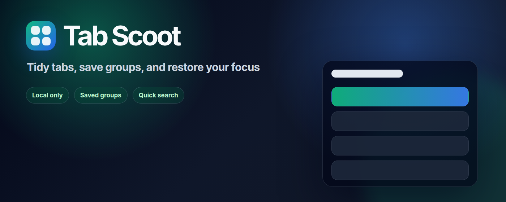
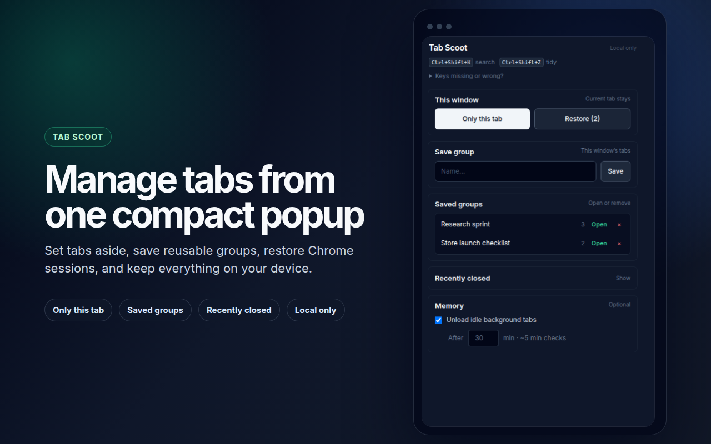
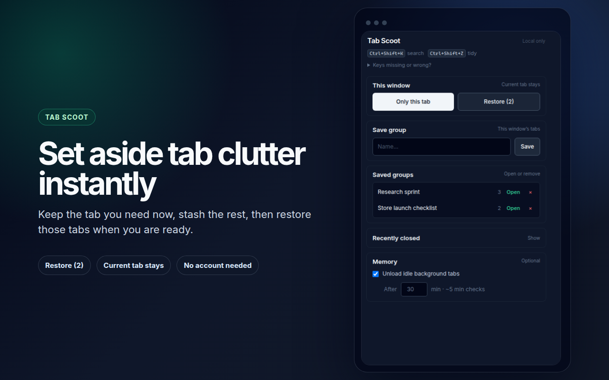
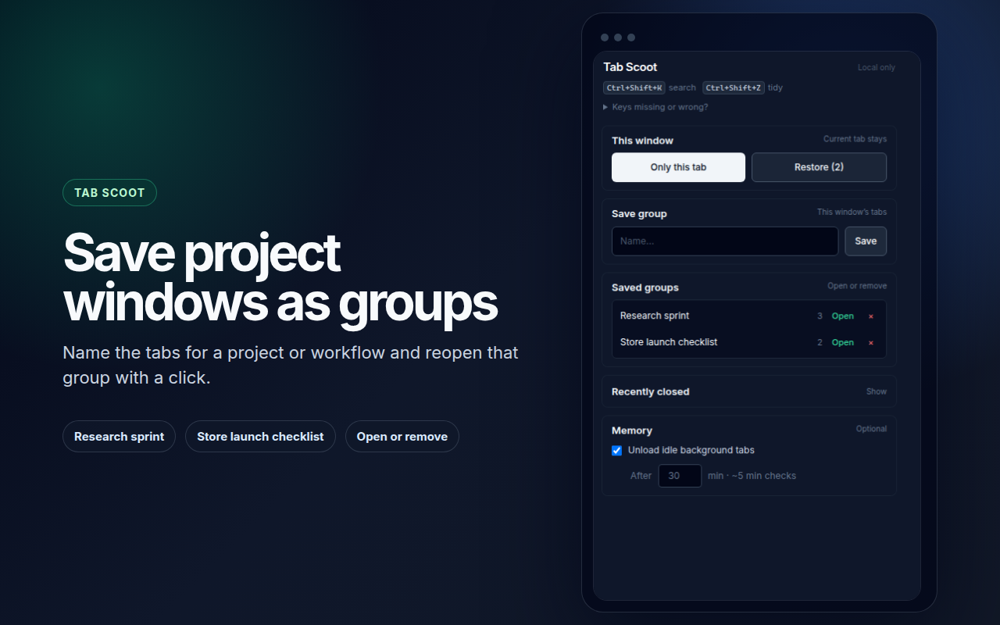
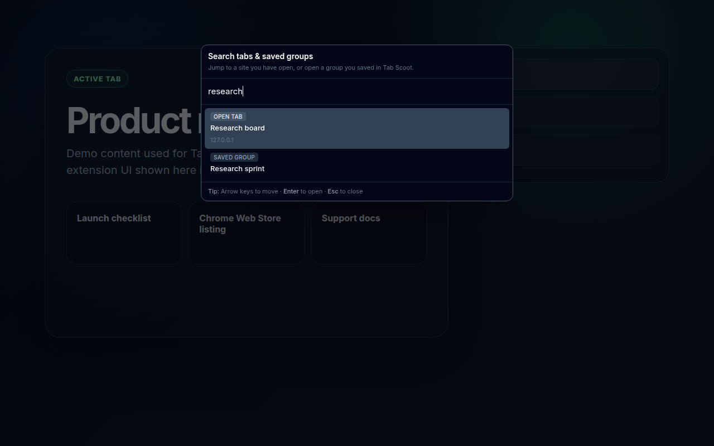
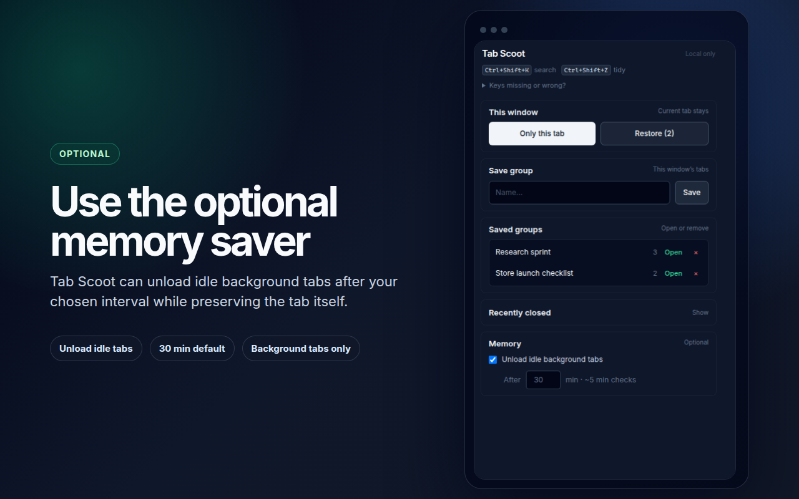

Set-aside (Zen)
Keep only the active tab in this window; stash the rest to reopen when you’re ready.
Tab Scoot helps you tidy Chrome with set-aside mode, saved tab groups, a fuzzy search palette, recently closed, and an optional memory saver — with no account and data that stays on your device.

Replace the Store button URL with your real listing when it’s live. Screenshots below are the same assets used for store listing previews.
Everything runs in Chrome: a popup for stash and groups, keyboard shortcuts for zen mode and the palette, and optional background tab discard — aligned with a single tab-management purpose.
Keep only the active tab in this window; stash the rest to reopen when you’re ready.
Name a snapshot of this window’s tabs and restore it later from the popup.
Fuzzy search across open tabs and saved groups. Assign shortcuts under chrome://extensions/shortcuts.
Uses Chrome’s own recently closed list — restore in one click from the popup.
When enabled, discards eligible background http/https tabs to reduce RAM (Chrome discard — click to reload).
Stash, groups, and preferences use chrome.storage.local — no project-operated cloud in this product.
Pulled from the same store-assets/chrome-web-store/screenshots set used for Chrome Web Store
graphics — copied into this site’s assets/screenshots so GitHub Pages stays self-contained.




